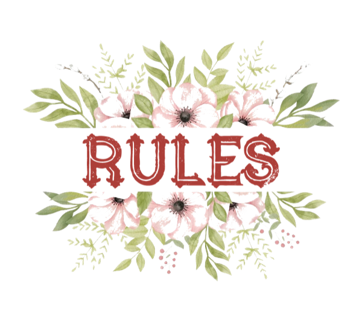

活动规则
- 在参加活动前，请向您所在的连队军官（Co）报名，以便统计玩家人数。
- 在参加活动前，请使用正确的标识前缀，并在所属连队的语音频道中集结。
- 参与活动时，请遵守亚服规则，避免脱离线列开火、进入建筑物、擅自选择军官（Co）与军士（NCO）、擅自指挥友军或刻意友伤。
- 请勿在游戏聊天或语音频道中发表人身攻击或侮辱性言论；请勿大声喧哗或当众谴责友军连队。克制胜负心，保持友好、乐观和平静。
关于权力
- 团部：团级军官（Co）可过问连队管理、训练、活动与规则制定，须以营造和谐、友好、团结的游戏社区为目标。
- 连队：玩家分为军官（Co）、军士（NCO）与应征（Enlisted）三个层级。军官负责指挥与管理，军士负责督促执行并协助制定战术。
- 共同：所有玩家均可参与团级与连级军官任免投票，并可在活动结束后评价指挥表现。